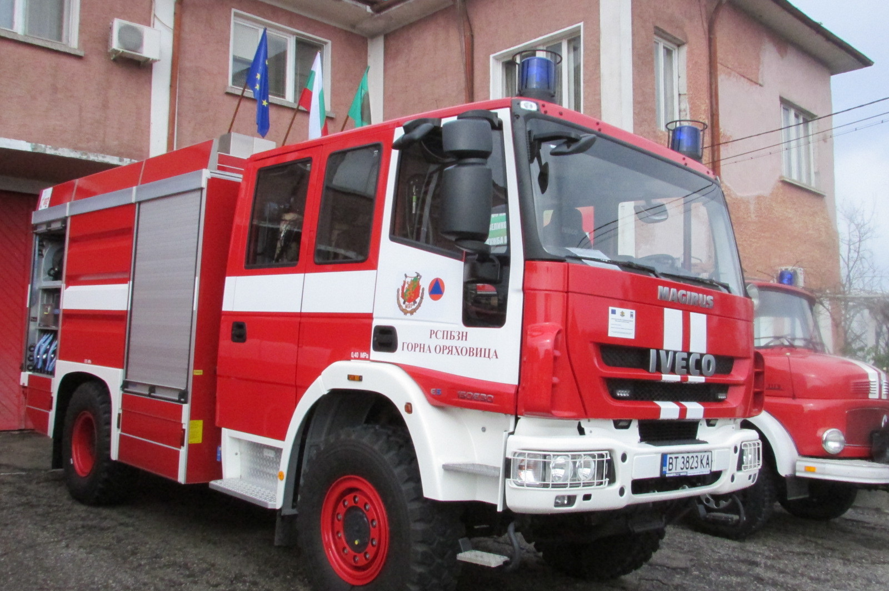

Пожарни танкери
само за предаване на пожарогасителни агенти до
местоназначението им, но и за транспортиране на бойни
екипажи.

Пожарна кола
се откроява сред другите противопожарни средства. Това
се дължи на висока мобилност и малък размер. Пожарните
танкери са много чести.

Летищните автомобили
и самолети,пожарната машина пристига на повикване, която
често се намира в близост до летище.
Пожарни коли за нефтохимическата промишленост
за борба с пожарите с различна тежест в нефтохимическата
индустрия. В горското стопанство съоръженията в газовата
промишленост често използват комбинирано гасене.